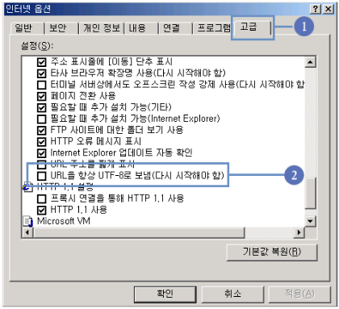

뷰어다운로드
-
뷰어다운로드
- 파일로 된 문서들을 '보기'만 지원하는 프로그램입니다. 뷰어로는 문서내용 보기만 가능하며, 문서의 내용을 수정하거나 삭제하는 편집은 할 수 없습니다.
한글2010외 6가지 입니다.
- 사용하시는 컴퓨터에 해당 뷰어가 설치되어 있지 않은 경우 국립대전현충원 홈페이지에서 뷰어를 다운로드 받아 컴퓨터에 설치하셔야 합니다.
뷰어는 사용하시는 컴퓨터에 한번만 설치하시면 됩니다.
-
개인정보보호지침
- 국립대전현충원에서 취급하는 모든 개인정보는 관련법령에 근거하거나 정보주체의 동의에 의하여 수집·보유 및 처리되고 있습니다.
-
첨부파일이 열리지 않는 경우
-
게시판 등에 첨부된 파일을 클릭한 후 (페이지를 찾을 수 없습니다.)라는 메시지가 나올 경우에 대한 해결방법
- ① 익스플로어 상단 메뉴에서 [도구]클릭 → [인터넷옵션]클릭
-
② [고급]클릭 → 탐색『URL을 항상 UTF-8으로 보냄』항목의 체크 표시를 해제 → [확인]클릭

- ③ 현재 열려있는 익스플로어를 닫고 다시 익스플로어를 열어 이용
- 위에 UTF-8 항복에 체크가 되어 있으면 한글이름의 첨부파일 내려 받기가 안됩니다.
- 저희 홈페이지에서뿐만 아니라 다른 홈페이지에서도 같은 문제가 일어납니다.
-
각종뷰어프로그램 모음
-
- 한글 Viewer
- 한글 2010은 한글문서(*.hwp)의 내용을 확인하거나 인쇄할 수 있습니다.
-
- 워드패드 Viewer
- MS-Word 97/2000 문서를 보실 수 있는 프로그램입니다.
-
- 파워포인트 Viewer
- MS-PowerPoint 97/2000 문서를 보실 수 있고 프리젠테이션을 할 수 있습니다.
-
- 엑셀 Viewer
- MS-Excel 97/2000 문서를 보실 수 있는 프로그램입니다.
-
- ACROBAT READER
- MS-Word 97/2000 문서를 보실 수 있는 프로그랩입니다. 아크로뱃리더 5.0은 PDF문서(*.pdf)의 내용을 보고 인쇄할 수 있습니다.
-
- SHOCK WAVE
- ShockWave는 홈페이지에 사용된 플래시가 보이지 않을 경우 플래시를 보실 수 있도록 해주는 프로그램입니다.
-
리눅스/매킨토시용 뷰어프로그램
-
- 오픈 오피스 (Open Office)
- 한글 2010은 한글문서(*.hwp)의 내용을 확인하거나 인쇄할 수 있습니다.
-
- PDF Viewer
- PDF 파일을 열람할 수 있도록 도와주는 공개형 프로그램입니다. 윈도우, 리눅스 뿐만 아니라 매킨토시 등의 운영체제를 지원합니다.
-
백신(Vaccine)프로그램
-
- V3 Lite
- 안철수연구소의 V3와 SpyZero 통합엔진(TS엔진) 으로 바이러스와 스파이웨어를 한번에 진단 치료 합니다. 뉴 프레임워크 채용으로 세계 최고의 가벼운 엔진으로 인정받고 있으며, 검사속도 또한 국내 최고로 빠르고 정확합니다.
-
- 알약 (ALYAC)
- 최신버전의 비트디펜터 바이러스 엔진과 알약이 자체 개발한 악성코드 엔진을 동시 탑재한 알약은 복합 탐지 방식으로 오탐지율을 최소화하고 엔진 자동 업데이트로 최신 바이러스에 대응합니다.
휴리스틱 탐지기술인 B-HAVE를 이용, 바이러스 패턴 분석기법을 통해 신종 바이러스의 감염 피해를 최소화합니다.